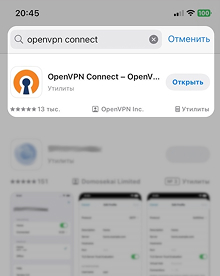
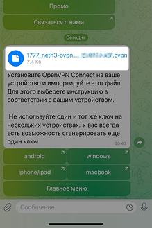
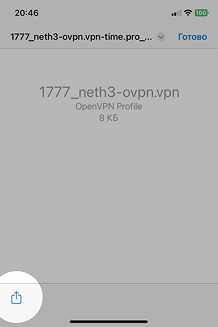
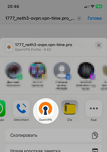
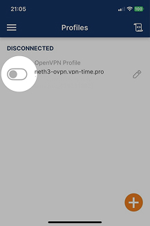
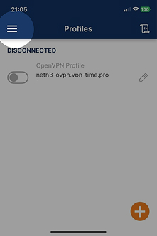
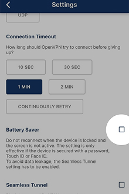

Установите OpenVPN Connect.
При первом запуске у вас спросят разрешение на показ уведомления (тут лучше согласиться: рекламы не будет, честно-честно).
Также попросят согласиться с условиями использования (увы, тут выбора нет).

Зайдите в телеграм бота, найдите сообщение с файлом ключа и нажмите на файл чтобы открыть

В правом нижнем углу нажмите кнопку импорта файла

Вам будет предложено выбрать программу для открытия файла.
Найдите и выберите OpenVPN.

В появившемся окне нажмите Add.
Затем нажмите CONNECT.
Подтвердите все разрешения
Чтобы включать/выключать VPN, двигайте этот ползунок.
Если всплывет окно, нажмите Don't show again, а затем CONFIRM.

Можно настроить автоматическое отключение/включение VPN при отключении/включении экрана.
Это позволит экономить не только заряд, но и ваш баланс и нашу пропускную способность.
ПРЕДУПРЕЖДЕНИЕ: С этой настройкой при частом включении/выключении экрана может происходить задержка при переподключении к VPN от нескольких секунд до 1 минуты.

Перейдите во вкладку Settings
Поставьте галочку напротив пункта Battery Saver
